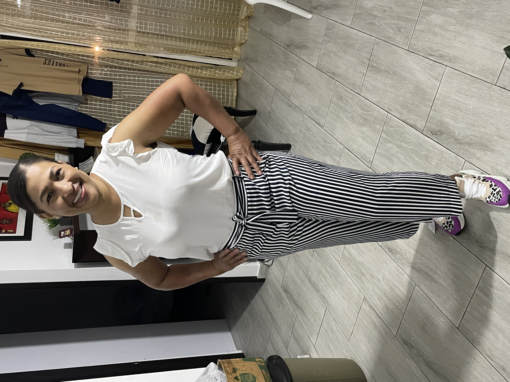

Hermosura de mi vida y de mi corazon, por donde empezar jaja. Fuiste, eres y seras siempre lo mas
importante de mi vida. Se que a veces te decepciono con mi lejania no justificada, mi cambio de
humor y todas las cosas malas que han pasado desde que te fuiste. Pero te amo y te amo mucho belleza
de mi vida. Te amo mas que nada mamita hermosa, siempre lo he dicho soy muy feliz de tenerte en mi
vida y Dios no pudo darme mejor mama que tu porque es sencillo !NO LA HAY!
Mamita hermosa de mi
vida, palabras sobran de verdad para describir como estoy de feliz por ti, por todas y cada una de
las cosas que has logrado en tu vida. Tambien las que faltan, porque se que todo el esfuerzo que has
depositado en salir adelante, en darnos la mejor vida posible, en salir de deudas y mil cosas mas
tendran un buen resultado mami. Nada es facil en esta vida, eso me lo enseñaste desde el dia 1. Por
eso tienes que estar tranquila belleza, tienes que estar consiente que esta lejania no va a durar
para siempre.
Queria decirte que no he pensado mucho en tu estadia en España porque simplemente
me quebraria y me pondria a llorar mucho, en saber que no comes bien, te tratan mal y te discriminan
me rompe el corazon. Por eso trato de aparentar lo mas fuerte posible para ti para que estes
tranquila que dejaste tu hogar en buenas manos. Se que no me cuentas la totalidad de las cosas y lo
se es normal, no nos quieres preocupar pero mami de verdad todo es temporal Ya casiii belleza.
Mami reina preciosa de mi vida TE AMO y nunca me he cansado de decirlo. Quisimos darte este regalo
ya que es complicado por la lejania darte tu mejor regalo que seria tenernos juntos a tu lado para
abrazarte, darte tremendos besos y decirte cosas hermosas mamita. Para que tengas un lugar seguro al
que acudir cuando las cosas no vayan bien, por si te sientes sin ganas y con ganas de tirar la
toalla. Estare actualizando este, nuestro lugar seguro para que lo visites en el momento que quieras
belleza jeje claramente te avisare cuando haya una nueva actualizacion jeje.
Hermosura me haces
mucha falta no te imaginas cuanto, llego de la universidad y la casa se siente muy sola. Falta tu
alegria, tu sonrisa, tu hermosa personalidad y caracter. Faltas TU y duele cada dia mamita, pero
estoy tranquilo porque cada vez queda poco. Cada vez queda poco para que nos veas como profesionales
haciendo lo que nos gusta, ya queda incluso mucho menos para que nos veamos con el paseo que estamos
planeado y mucho menos para que nuestra vida mejore mamita solo es cuestion de tiempo y fe. Jamas en
la vida me he sentido decepcionado de ti, siempre me haces sentirme orgulloso al hablar con otras
personas sobre ti, porque lo vales. Eres unica mamita, !LA MUJER MAS HERMOSA DEL PLANETA TIERRA! esa
eres tu mami. TE AMO TE AMO Y TE AMO MUCHISISISISIISMO. Espero pases no solo hoy sino que todos los
dias de tu vida feliz y agusto como te gusta estar. TE ADOROO CON MI VIDAAAAAAAAAAAAAAA BESOS Y
ABRAZOS VIRTAULES MAMITA HERMOSAAAAAAAAAA.